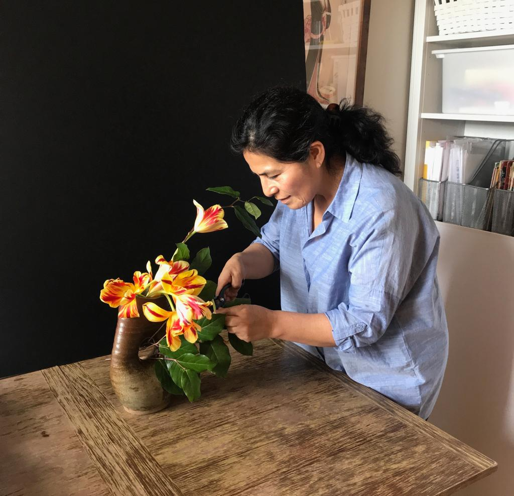

Josefina Soto was born and grew up in Arequipa, Peru. As a young adult, she traveled to Cusco where she was exposed to the fabrics, textures, and colors that are typical of the crafts of the indigenous population. She experienced up close the dexterity with which these artisans create their ancient forms and patterns.
In her early 30's she moved to Brazil. Not long after that, she started a family. Brazilian culture, with its emphasis on vivid colors and sounds, captivated her. It was at this time in her life that she first encountered Ikebana. She enrolled her oldest child in a Japanese school, which was run by the Japanese community living in Brazil.
In her early 30's she moved to Brazil. Not long after that, she started a family. Brazilian culture, with its emphasis on vivid colors and sounds, captivated her. It was at this time in her life that she first encountered Ikebana. She enrolled her oldest child in a Japanese school, which was run by the Japanese community living in Brazil.
Read More